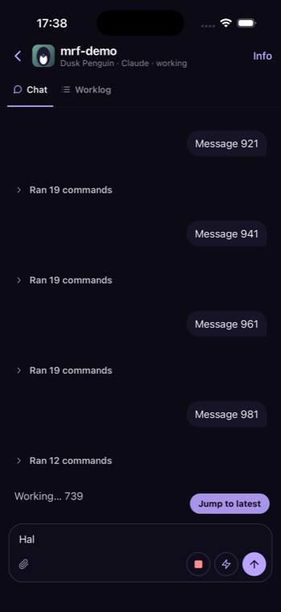
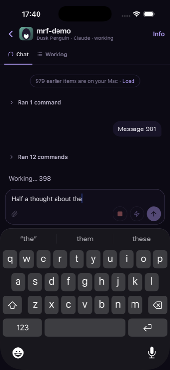

The problem
Every reconnect closed the keyboard and dropped your draft
~4 sbetween reconnects, on WiFi as well as 4G
“Hal”was all that survived of “Half a thought about the…”

before 1before
1beforeAfter
Kill the connection mid-sentence and keep typing
before→

after after
after